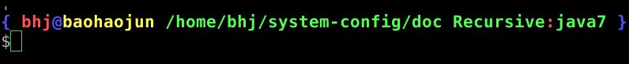

faq-cn
1 如何更改java版本
system-config提供了一个java7和java6的命令，你可以直接运行，系统会启动一个新的shell，并且提示你是java7版本还是java6版本，如图所示：

也可以在java7/java6之后直接输入命令，比如在T2代码下编译kernel： java7 make kernel
2 如何更改其他软件版本
system-config会修改你的系统的一些环境变量，其中最重要的一个是PATH，在ubuntu/debian自带的PATH变量前面，加上一些system-config自己的PATH路径，比如 ~/system-config/bin 等。所以像系统java版本的问题，因为system-config会在 ~/external/bin/Linux/ext/jdk/bin 下放一个 oracle 的 1.6 版java，并且这个路径在PATH变量里排在 /usr/bin/ 前面，所以不管你怎么用 update-alternatives 修改 /usr/bin/java 的版本，你在命令行输入 java -version 看到的永远是 1.6 。
所以，要修改你的java版本，有两种办法：
- 临时修改一下 PATH 环境变量，比如在命令行上执行
PATH=/usr/bin:$PATH，然后再执行java。 - 在
~/system-config/bin/overide创建指向一个/usr/bin/java的软链接。
以下是一些查看各种程序版本的一些有用的命令：
which java # 显示java程序在PATH变量里找到的第一个路径 type java # 与上面类似，但如果 java 被定义成一个 alias、function，也可以有显示 type -a java # 显示 java 的所以版本（alias、function、在PATH变量里能找到的所有版本）
注意如果要永久修改自己的 PATH 环境变量的话，一定要在 ~/.bashrc 的末尾处修改，这样能保证 system-config 对 PATH 变量的修改已经完成。如果放在 system-config 之前修改 PATH 的话，system-config再修改的时候，你的修改会被冲掉。
3 TODO 应该安装何种java版本
安卓5.0之前的项目，比如我们的T1，用的必须是 oracle 的java 1.6。换成用openjdk 1.6是不行的。 安卓5.0及之后的项目，比如T2、U1（升级之后），用的必须是 OpenJDK 的 java 1.7。类似的，换成 oracle 的 java 1.7 也是不行的。
这两个版本的java在配置好system-config之后，都已经安装在系统上，你只需要按照需求配置一下你的环境变量即可。参考上节。